When designing your interface, try to be consistent and predictable in your choice of interface elements. Whether they are aware of it or not, users have become familiar with elements acting in a certain way, so choosing to adopt those elements when appropriate will help with task completion, efficiency, and satisfaction.
Interface elements include but are not limited to:
- Input Controls: checkboxes, radio buttons, dropdown lists, list boxes, buttons, toggles, text fields, date field
- Navigational Components: breadcrumb, slider, search field, pagination, slider, tags, icons
- Informational Components: tooltips, icons, progress bar, notifications, message boxes, modal windows
- Containers: accordion
Input Controls
| Element | Description | Examples |
|---|---|---|
| Checkboxes | Checkboxes allow the user to select one or more options from a set. It is usually best to present checkboxes in a vertical list. More than one column is acceptable as well if the list is long enough that it might require scrolling or if comparison of terms might be necessary. | 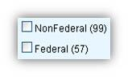 |
| Radio buttons | Radio buttons are used to allow users to select one item at a time. | |
| Dropdown lists | Dropdown lists allow users to select one item at a time, similarly to radio buttons, but are more compact allowing you to save space. Consider adding text to the field, such as ‘Select one’ to help the user recognize the necessary action. | |
| List boxes | List boxes, like checkboxes, allow users to select a multiple items at a time,but are more compact and can support a longer list of options if needed. | 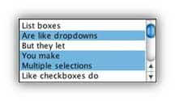 |
| Buttons | A button indicates an action upon touch and is typically labeled using text, an icon, or both. | |
| Dropdown Button | The dropdown button consists of a button that when clicked displays a drop-down list of mutually exclusive items. | 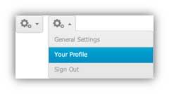 |
| Toggles | A toggle button allows the user to change a setting between two states. They are most effective when the on/off states are visually distinct. | 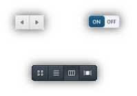 |
| Text fields | Text fields allow users to enter text. It can allow either a single line or multiple lines of text. | 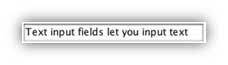 |
| Date and time pickers | A date picker allows users to select a date and/or time. By using the picker, the information is consistently formatted and input into the system. | 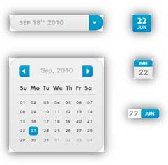 |
Navigational Components
| Element | Description | Examples |
|---|---|---|
| Search Field | A search box allows users to enter a keyword or phrase (query) and submit it to search the index with the intention of getting back the most relevant results. Typically search fields are single-line text boxes and are often accompanied by a search button. | 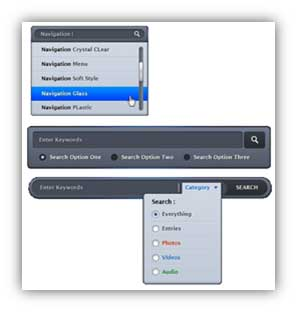 |
| Breadcrumb | Breadcrumbs allow users to identify their current location within the system by providing a clickable trail of proceeding pages to navigate by. | 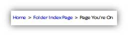 |
| Pagination | Pagination divides content up between pages, and allows users to skip between pages or go in order through the content. | 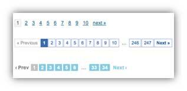 |
| Tags | Tags allow users to find content in the same category. Some tagging systems also allow users to apply their own tags to content by entering them into the system. | 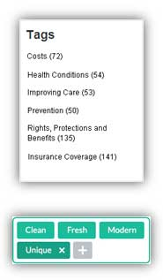 |
| Sliders | A slider, also known as a track bar, allows users to set or adjust a value. When the user changes the value, it does not change the format of the interface or other info on the screen. | 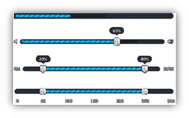 |
| Icons | An icon is a simplified image serving as an intuitive symbol that is used to help users to navigate the system. Typically, icons are hyperlinked. | 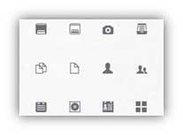 |
| Image Carousel | Image carousels allow users to browse through a set of items and make a selection of one if they so choose. Typically, the images are hyperlinked. | 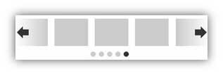 |
Information Components
| Element | Description | Examples |
|---|---|---|
| Notifications | A notification is an update message that announces something new for the user to see. Notifications are typically used to indicate items such as, the successful completion of a task, or an error or warning message. | |
| Progress Bars | A progress bar indicates where a user is as they advance through a series of steps in a process. Typically, progress bars are not clickable. | 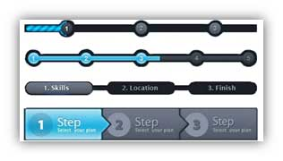 |
| Tool Tips | A tooltip allows a user to see hints when they hover over an item indicating the name or purpose of the item. | 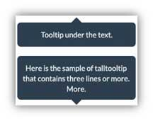 |
| Message Boxes | A message box is a small window that provides information to users and requires them to take an action before they can move forward. | 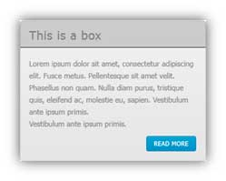 |
| Modal Window (pop-up) | A modal window requires users to interact with it in some way before they can return to the system. | 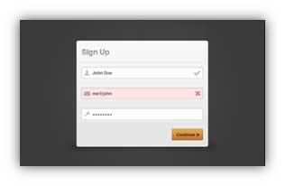 |
Containers
| Element | Description | Examples |
|---|---|---|
|
Accordion |
An accordion is a vertically stacked list of items that utilizes show/ hide functionality. When a label is clicked, it expands the section showing the content within. There can have one or more items showing at a time and may have default states that reveal one or more sections without the user clicking | 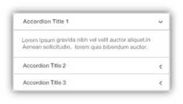 |
Additional Information
- Jesse James Garrett’s The Elements of User Experience: User-Centered Design for the Web and Beyond (2nd Edition)
-
User Interface Information for Android Developers